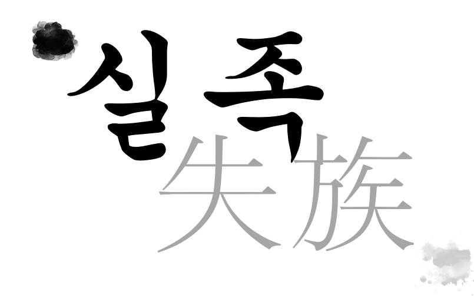
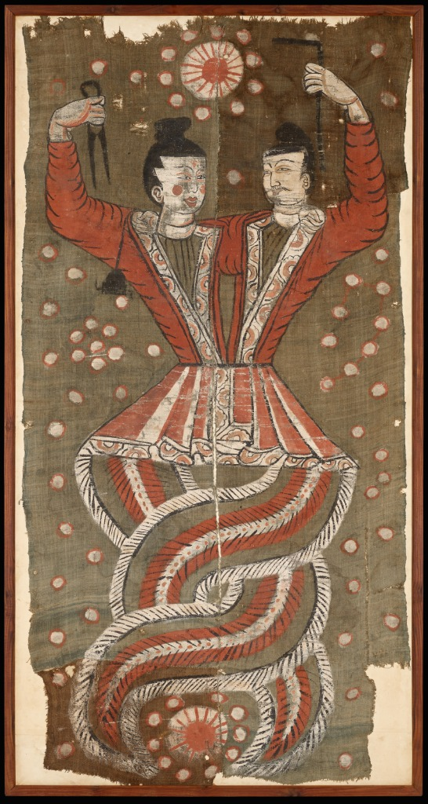

圖錄
훈음: 잃을 실 (상실, 놓침, 헤어짐)
전시적 의미: 제국주의의 침탈로 고향과 삶의 터전, 그리고 자신의 뿌리(族)를 송두리째 빼앗긴 상실의 역사.
훈음: 겨레/가족 족 (혈통, 동포, 근원)
전시적 의미: 단순한 발(足)이 아닌, 우리가 돌아가야 할 근원이자 실크로드 다문화 오아시스에 뿌리내렸던 공동체의 기억.
실족
“발을 잃음이 아닌,
가족과 뿌리를 빼앗긴 자들(失族)의 비극”
"우리는 왜 뿌리를 잃어버렸으며, 이 유물은 누구에게로 돌아가야 하는가?"

실크로드의 길목, 위구르와 중원이 만난 문명 융합의 궤적
《복희여와도》는 중국 내륙에 갇힌 신화가 아닙니다. 실크로드 지역(투루판)에 터잡은 위구르계 민족들과 중앙아시아인들이 중국(중원) 문화와 접촉·교류하면서 탄생한 대표적인 문명 융합의 현상입니다. 서역의 마니교적 빛 숭배와 입체적인 음영 화풍이 사막의 오아시스에서 중국 창조신화와 만나 하나의 예술로 피어났습니다.
장안 (시안)
중원 신화의 발원과 복희·여와 시조 전승
돈황 오아시스
동서 교역 상인(카라반)과 불교·동양 문화의 교차로
투루판 아스타나
위구르·중앙아시아와 중국의 만남
마니교 빛 숭배 + 서역 화풍 + 중국 신화의 융합
서울 국립중앙박물관
20세기 제국주의 약탈로 뿌리를 잃은(失族) 유물의 현주소
目 錄
EXHIBITION SECTIONS발을 헛디딤이 아닌, 뿌리를 빼앗김(失族)
‘실족’은 단순히 발을 헛디딤만을 뜻하지 않습니다.
가족할 때의 ‘족(族)’, 즉 자신의 본래 터전과 뿌리를 송두리째 잃어버린(失族) 비극을 뜻합니다.
국립중앙박물관 상설전시관 3층에 걸린 《복희여와도(伏羲女媧圖)》는 중국 고대 창조신화의 주인공들을 담고 있습니다. 그러나 이 유물은 한족의 본토가 아닌, 6~7세기 실크로드 투루판 아스타나의 흙먼지 속에서 피어난 융합 문화의 정수였습니다.
중앙아시아의 마니교적 빛 숭배와 독창적 채색 기법이 신화와 결합했으나, 20세기 초 제국주의 열강(일본 오타니 탐험대)의 침탈로 무덤 천장에서 무참히 뜯겨져 나와 식민지 조선총독부를 거쳐 오늘날까지 타국의 박물관 쇼케이스에 갇히게 되었습니다.
“뿌리를 잃어버린(失族) 신들은
오늘 우리에게 무엇을 묻고 있는가?”
신들의 탄식: 복희와 여와의 목소리
마우스 호버 유물 위로 커서를 올리면 입술이 움직이며 신들의 고독한 탄식이 흘러나옵니다.

마니교의 광명: 뻗어나가는 햇살
머리 위 붉은 태양에서 뻗어 나가는 방사형 햇살은 중국 전통 도상보다는, 실크로드 투루판에 번성했던 마니교(Manichaeism)의 빛과 어둠의 이원론 및 광명 숭배를 직관적으로 증언합니다.
서역 오아시스 화풍: 음영과 윤곽
인물의 뺨과 옷자락에 가해진 굵고 힘찬 먹선과 바림(음영) 기법은 서역(중앙아시아) 회화의 전형입니다. 이 그림은 단순한 한족의 신화가 아니라 실크로드 문명이 융합된 독자적 결실입니다.
창조와 죽음의 순환: 분리될 수 없는 부부
원래 중국 신화 속 복희와 여와는 본래 발이 없는 뱀의 형상을 지녔습니다. 이들은 만물의 ‘창조’와 사후세계의 ‘죽음(내세)’을 상징하는 부부신으로, 하반신이 단단히 얽혀 있는 것은 결코 떨어질 수 없는 불가분의 결합이자 삶과 죽음의 영원한 순환을 의미합니다.
실크로드 교역의 주역: 위구르인의 독자적 문화
이 그림은 실크로드에서 중국과 활발히 교역하던 위구르인들이 직접 그린 문화유산입니다. 단순히 중국 문화에 동화(중화화)된 것이 아니라, 중원의 신화를 주체적으로 수용하여 위구르인들만의 독창적이고 자율적인 오아시스 예술 문화를 꽃피운 생생한 증거입니다.
모래바람을 뚫고 타국으로 끌려온 유물
19~20세기 제국주의 열강의 침탈은 식민지의 수많은 문화유산을 뿌리 뽑았습니다.
투루판 아스타나 고분
사막 오아시스 고창국 귀족 무덤 천장에 매달려 망자가 누워서 영원한 우주와 별자리를 바라보게 했던 성물.
일본 오타니 탐험대의 약탈
일본 승려 오타니 고즈이의 탐험대가 실크로드 유적을 파헤치며 무덤 천장에서 강제로 뜯어내 수집(약탈).
조선총독부 박물관 이관
일본 광산 재벌 구하라 후사노스케를 거쳐 식민지 통치 기구인 조선총독부 박물관으로 기증되며 한반도 유입.
대한민국 국립중앙박물관
해방 후 국립중앙박물관으로 승계되어 보존. 본향에서 4,000km 떨어진 타국의 수장고에 갇힌 유물의 현주소.
제국주의 박물관학과 문화 다양성의 훼손
약탈 문화유산을 전시하는 것은 피지배국의 문화를 기리기보다, 제국주의 열강의 수집력과 지배력을 과시하는 전리품 전시의 성격이 강했습니다. 그 결과 고유하고 독자적인 문명은 '야만'이나 '문맹'의 낙인이 찍히거나, 아예 역사 속에서 삭제당했습니다. (예: 19세기 네덜란드 국립박물관의 인도네시아 왕국 약탈 유산 전시)
누구에게 돌려주어야 하는가?
슬라이드 관람 좌우 화살표나 상단 탭을 눌러 각 주체의 복잡한 정치·역사적 목소리를 넘겨보세요.
우리는 어디에서 뿌리를 찾는가?
“약탈당한 유물이 있어야 할 자리는
제국의 승리를 뽐내는 전리품 진열장이 아니라,
자신의 뿌리와 역사를 온전히 기억하는 공동체의 품입니다.”
관람자의 생각 남기기
뿌리를 잃어버린(失族) 《복희여와도》와 약탈 문화유산의 미래에 대한 여러분의 생각을 나눠주세요.
출처 및 참고 문헌
주요 언론 보도 및 학술 칼럼
- 연합뉴스: 제국주의 약탈 문화재 반환 소유권 분쟁 기획
- 경향신문: 소수민족 문화재와 탈식민주의 박물관학 기사
- 국제신문: 식민지 침탈 유산과 반환 윤리 관련 칼럼